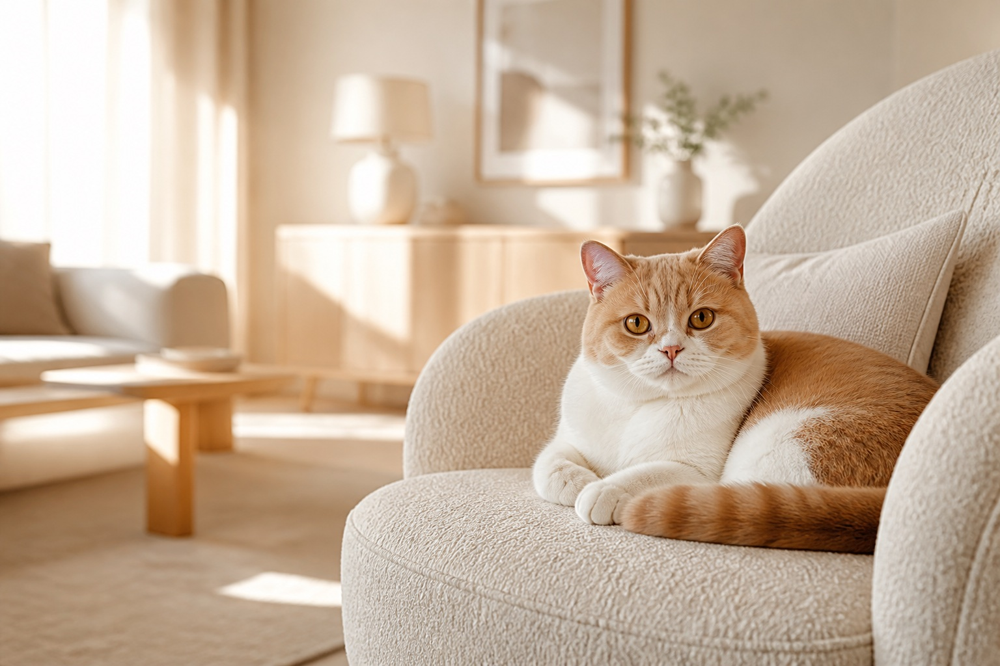
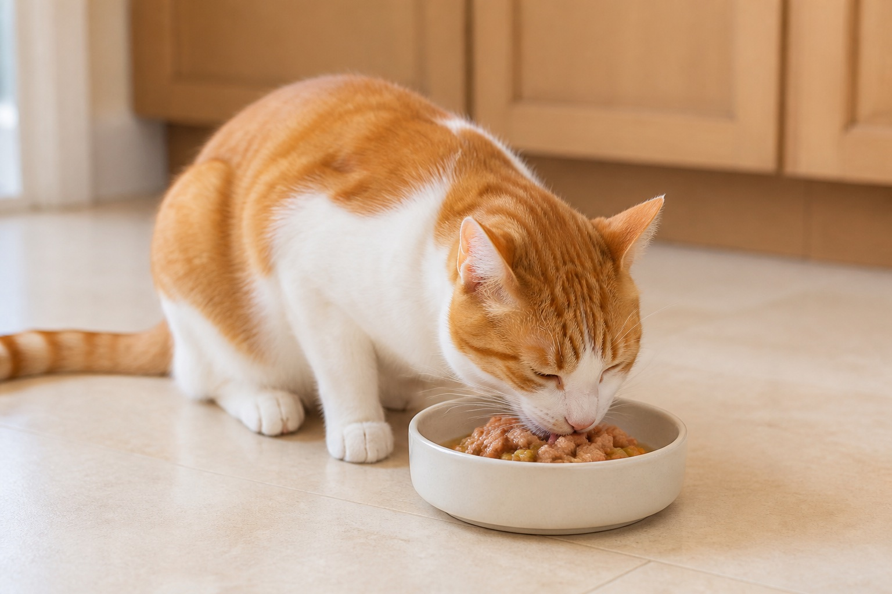
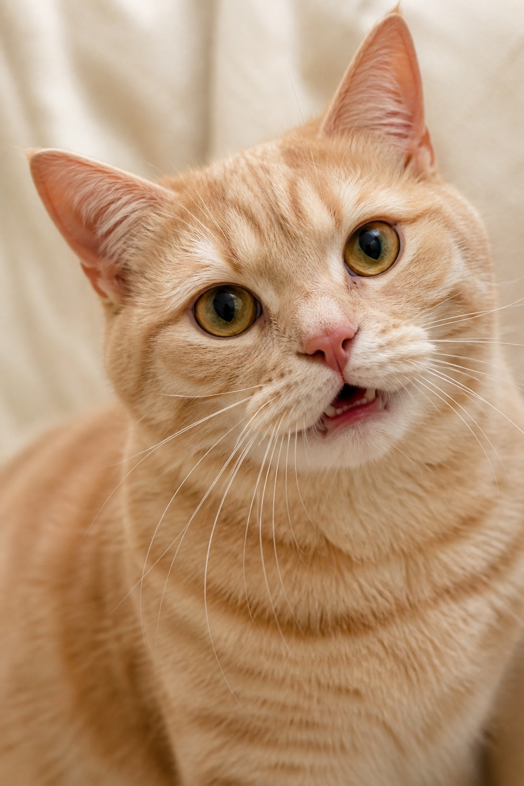

领地感
熟悉的气味与路线让猫咪安心。搬家或添置新物品时，给它一点适应时间。

它们敏锐、独立，也会建立深厚依恋。真正的亲近来自稳定的日常和被尊重的选择。
熟悉的气味与路线让猫咪安心。搬家或添置新物品时，给它一点适应时间。
短时、高频的逗猫游戏比一直把玩具放在地上更有吸引力。
用脸颊蹭你，是在留下熟悉气味，也可能是在表达友好和信任。
固定的喂食、游戏和休息节奏，有助于减少紧张与过度叫唤。

优先选择标明全价或完整均衡营养的猫粮，并根据年龄、体况与兽医建议调整。
成长速度快，需要能量密度更高、适合幼猫阶段的完整营养主食。
不要喂：洋葱、大蒜、巧克力、酒精、木糖醇、葡萄与葡萄干、生面团、熟骨头。突然拒食或持续呕吐时请尽快咨询兽医。
叫声要结合耳朵、尾巴、姿势和当时情境判断。点击一种声音看看常见含义。
短促、音量适中的叫声，常出现在迎接你或寻求关注时。
你可以：先看它走向哪里，再决定是陪玩、添水还是留出空间。

点击完成一项。勾选进度会保存在当前浏览器中，方便下次回来继续。
展开一个问题，看看这些熟悉行为背后的科学解释。
放松的慢眨眼常出现在友好互动中。你也可以柔和地看向它，慢慢闭眼，再移开视线，避免一直盯视。
不一定。猫咪放松时会呼噜，紧张、疼痛或自我安抚时也可能呼噜。要同时观察食欲、姿势和活动变化。
很多成年猫对乳糖的耐受较差，普通牛奶可能引起消化不适。日常最适合的饮品仍是干净的水。
可能是在探索物体、练习捕猎动作，或发现这样能获得你的注意。增加互动游戏通常比责骂更有效。
日常理毛很正常，但出现秃斑、皮肤发红或明显频繁舔咬时，可能与皮肤问题、疼痛或压力有关。